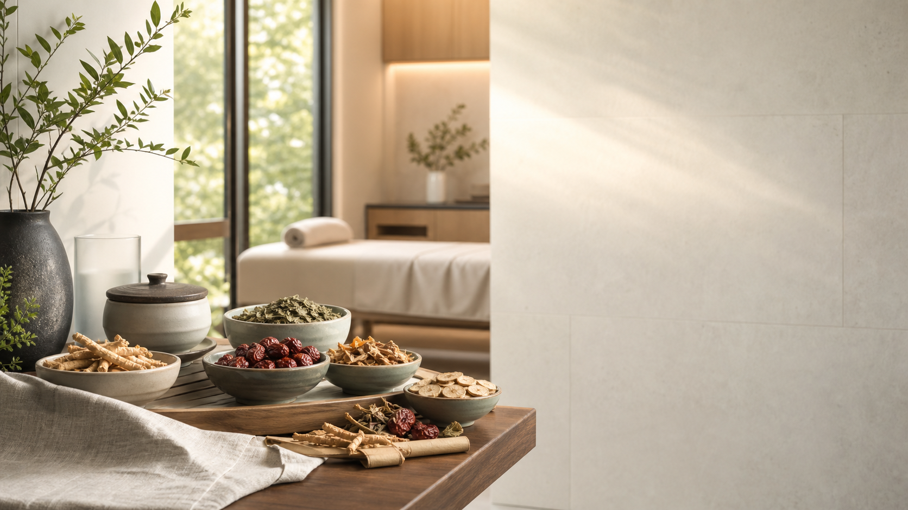
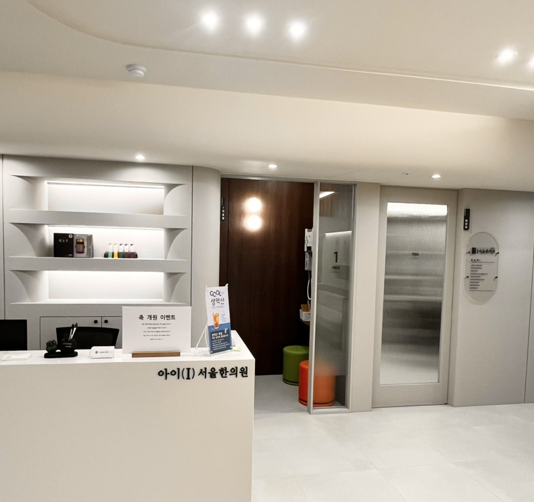

아이(I)서울한의원
사람마다 체질과 아픈 이유가 다르기에 아이(I)서울한의원은 아이부터 어른까지 현재 증상과 생활 습관을 함께 살핍니다.
삶을 건강하게 그리고 아름답게, 진심을 다해 진료하겠습니다.


아이부터 어른까지 체질에 따라 살피는 한의원입니다.
사람마다 체질과 아픈 이유가 다르기에 아이(I)서울한의원은 아이부터 어른까지 현재 증상과 생활 습관을 함께 살핍니다.
삶을 건강하게 그리고 아름답게, 진심을 다해 진료하겠습니다.

